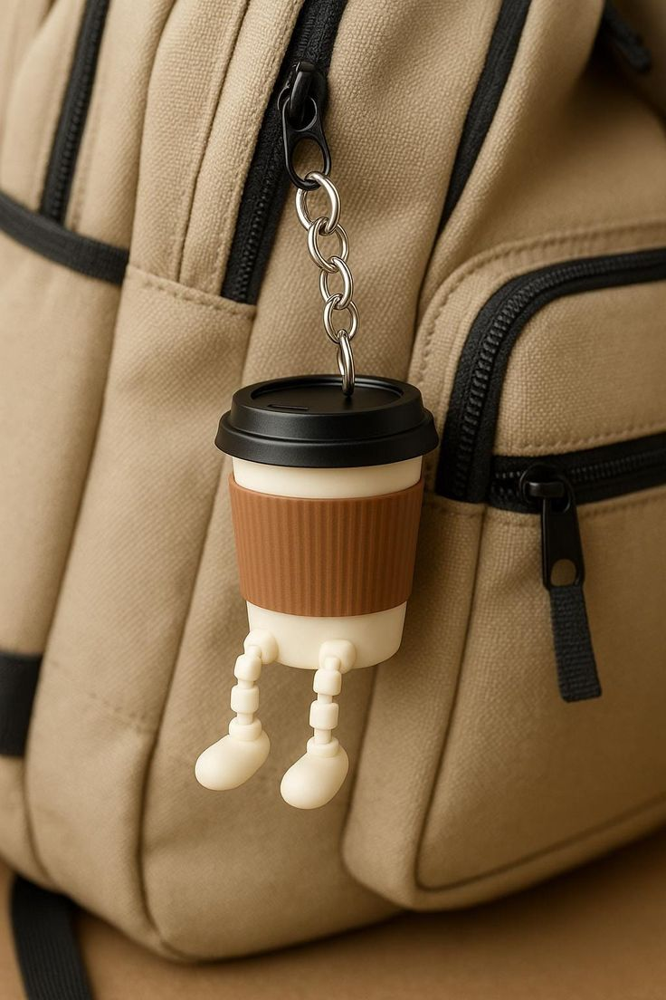

Uçuş ve Dron Projeleri
FPV uçuş deneyimlerim, otonom sistemler üzerine çalışmalarım ve dron dünyasına dair heyecan verici projelerim çok yakında burada olacak. Havadan çekilmiş yeni görüntüler ve teknik detaylar için takipte kalın.

3D Pixel Art Tasarımlar
3D yazıcı ile ürettiğim çok renkli pixel art anahtarlıklar, tasarım süreçlerim ve özel modeller yakında bu sayfada yerini alacak. Hem dijital modelleme hem de fiziksel üretim aşamalarını detaylarıyla paylaşacağım.
